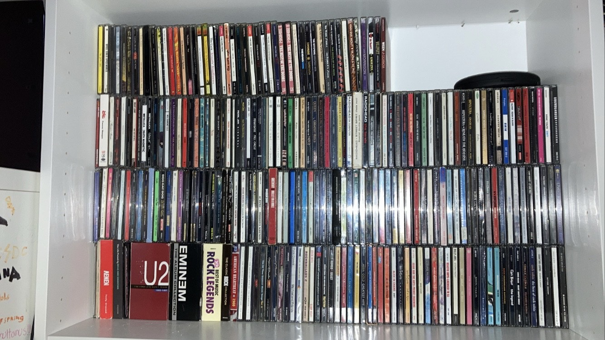

Wie ben ik?
Mijn naam is Thomas de Bruijn, ik ben 20 jaar en ik woon in Hulst (binnenkort in Middelburg). Ik ben geslaagd voor de HAVO op het Lodewijk College in Terneuzen, waar ik een EM profiel heb gevolgd. Als bijbaan werk ik in het weekend bij de Intratuin in Hulst. Ik ben zelf gediagnosticeerd met Asperger (autisme) zowel als ADHD. Hoe wel deze factoren mij weinig tot niet beperken in mijn dagelijks leven, is het wel een onderdeel van mij en heb ik geen moeite met dit bespreken.
In mijn vrije tijd doe ik verschillende dingen. Wat mij anders maakt dan mijn medeleerlingen is dat ik niet zo'n enorme gamer ben, ik kijk veel liever of een film of serie. Ik ben een enorme filmfanaat en ik kijk veel meer films dan de gemiddelde persoon. Ik weet er ook enorm veel vanaf, dus aarzel niet iets aan me te vragen over films of als je de naam van een film niet meer weet, ik kom er hoogstwaarschijnlijk wel uit. Ik verzamel ook DVD's en Blu-Rays, want zo kan ik mijn favoriete films kijken wanneer ik daar zin inheb. Ook is mijn verdere studieplan hierna een filmopleiding te volgen en in het regieveld van deze industrie te komen.
Ik ben ook een enorme muziekfan; ik verzamel LP's, CD's (zie foto hieronder) en heb zelfs een paar cassette's. Ik luister naar een ENORME range muziek (denk aan metal, hardcore punk, indie, rock, folk, etc.) en ik ga heel graag naar concerten en zit ook in een band waar ik als vocalist fungeer.
Ik hou ook van voetbal en dan in het specifiek Feyenoord. Al sinds mijn geboorte ben ik opgegroeid in een gezin dat de beste club van Nederland support en dat is aan mij overgedragen. Ik ga graag naar wedstrijden, ook buiten Feyenoord interesseer ik me heel erg in de geschiedenis en het spel op zichzelf.
Tot slot hou ik van comic books, literatuur en kunst, waarmee ik me ook vaak genoeg bezig hou. Ik heb beeldende kunst gevolgd op de middelbare school en was daar dan ook aardig goed in.
Mijn karakteristieken zijn:
- Ik ben eerlijk
- Ik ben behulpzaam
- Ik ben creatief
- Ik ben gedreven en bereid om nieuwe dingen te leren

- Ik ben eerlijk
- Ik ben behulpzaam
- Ik ben creatief
- Ik ben gedreven en bereid om nieuwe dingen te leren